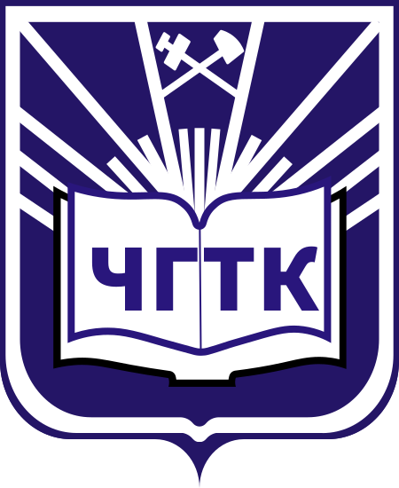
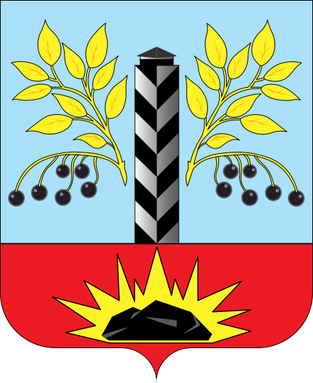
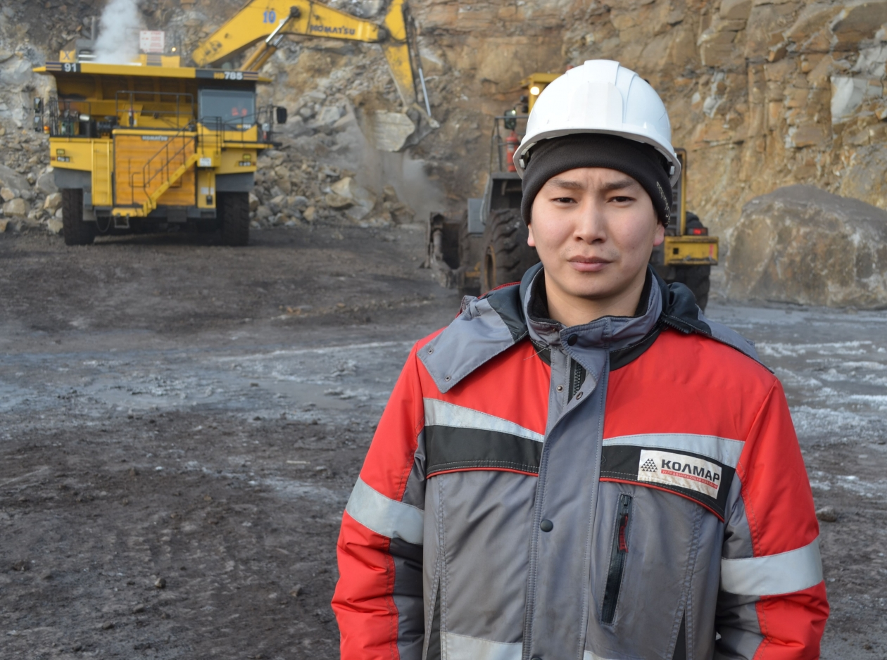
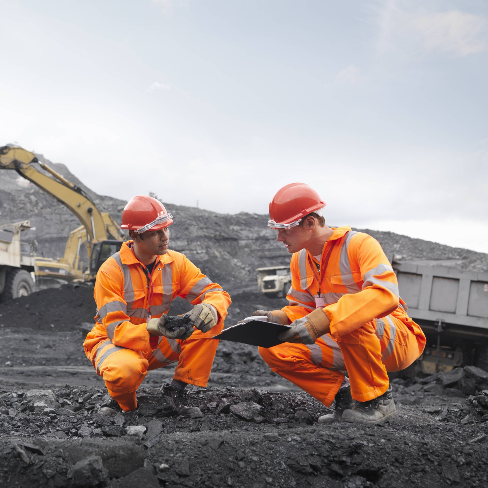
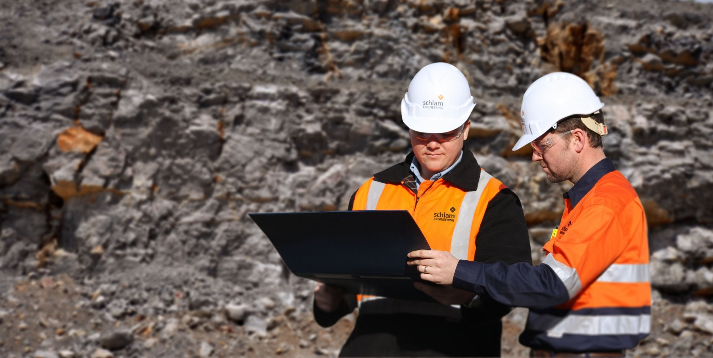
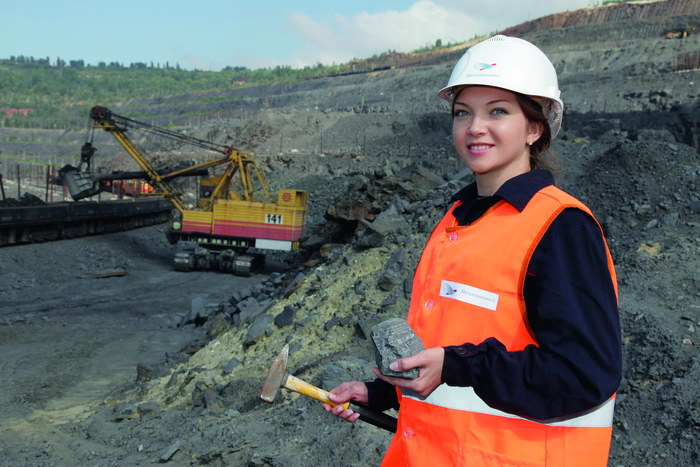
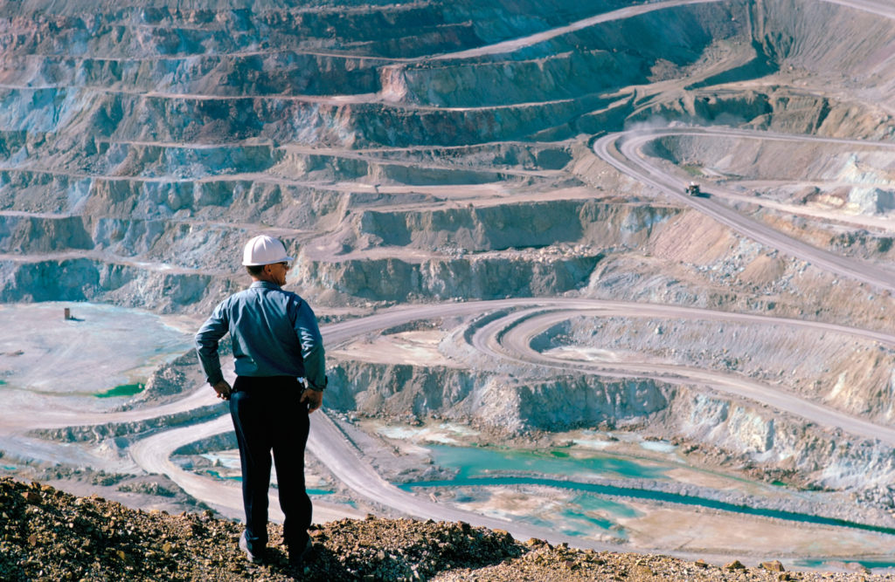

Открытые Горные Работы


Немного моментов из нашей специальности

Квалификация: Специалист по горным работам
Срок обучения: 3 года 10 месяцев
Специальность «Открытые горные работы» открыта в Черемховском горнотехническом колледже в 1940 году, тогда она называлась «Механизация открытых горных работ» (МОР). В пятидесятые годы ее стали именовать «Открытая разработка угольных месторождений». По ГОСТУ 2000 года она стала именоваться «Открытые горные работы».
Открытый способ разработки как генеральное направление развития горнодобывающих отраслей промышленности России сохраняется для обеспечения топливом и минеральным сырьем потребностей энергетики, черной и цветной металлургии, химической индустрии, строительства, машиностроения, вычислительной техники и др.
Применение во всех отраслях горнодобывающей промышленности и высокий удельный вес открытого способа добычи полезных ископаемых обусловлены следующими его основными преимуществами (по сравнению с подземным способом) экономического, технического, технологического, экологического, организационного и социального характера:
Кардинальной экономии производственных ресурсов, выражающейся в производительности труда от 3–4 раз по рудным карьерам, до 10–11 раз — угольным и снижение себестоимости продукции в 3–4 раза;
сокращением в 2–3 раза и более сроков строительства предприятий одинаковой мощности;
снижением потерь полезных ископаемых в недрах до 1–5%;
безопасными и более комфортными условиями труда.
В основе промышленного развития Архангельской области за счет минерально-сырьевых ресурсов необходима подготовка кадров для отраслей, ранее нехарактерных для Архангельской области. Учитывая, что подавляющее большинство месторождений твердых полезных ископаемых залегает на небольших глубинах, необходимо для их разработки иметь специалистов по разработке месторождений открытым способом.
Объектами профессиональной деятельности горного инженера по специальности «Открытые горные работы» являются рудные карьеры и горно-обогатительные комбинаты, угольные разрезы, карьеры и горно-обогатительные комбинаты по добыче нерудных строительных материалов, горнодобывающие предприятия по разработке россыпных и техногенных месторождений на материке, шельфе, в океане и в закрытых водоемах, а также предприятия, выполняющие горно-строительные работы с поверхности земли и горные экологические работы.
Область профессиональной деятельности выпускников:
Введение технологических процессов при добыче полезных ископаемых открытым способом на производственном участке;
Открытый способ добычи полезных ископаемых обеспечивает наиболее эффективные и безопасные условия разработки месторождений;
Объектами профессиональной деятельности выпускников являются:
Горные породы;
Технологический процесс разработки горных парод;
Горнотранспортное оборудование;
Техническая и технологическая документация.
Горный техник-технолог готовится к следующим видам деятельности:
Ведение технологических процессов горных и взрывных работ;
Контроль безопасности ведения горных и взрывных работ;
Организация деятельности персонала производственного подразделения;
Выполнение работ по одной или нескольким профессиям рабочих, должностям служащих.
Наши выпускники составляют основной костяк трудовых коллективов не только на разрезах городов Черемхово и Тулуна, но и на угледобывающих предприятиях республик Бурятии, Якутии и Читинской области.
По завершению обучения выпускники получают рабочую профессию «Слесарь-ремонтник».
